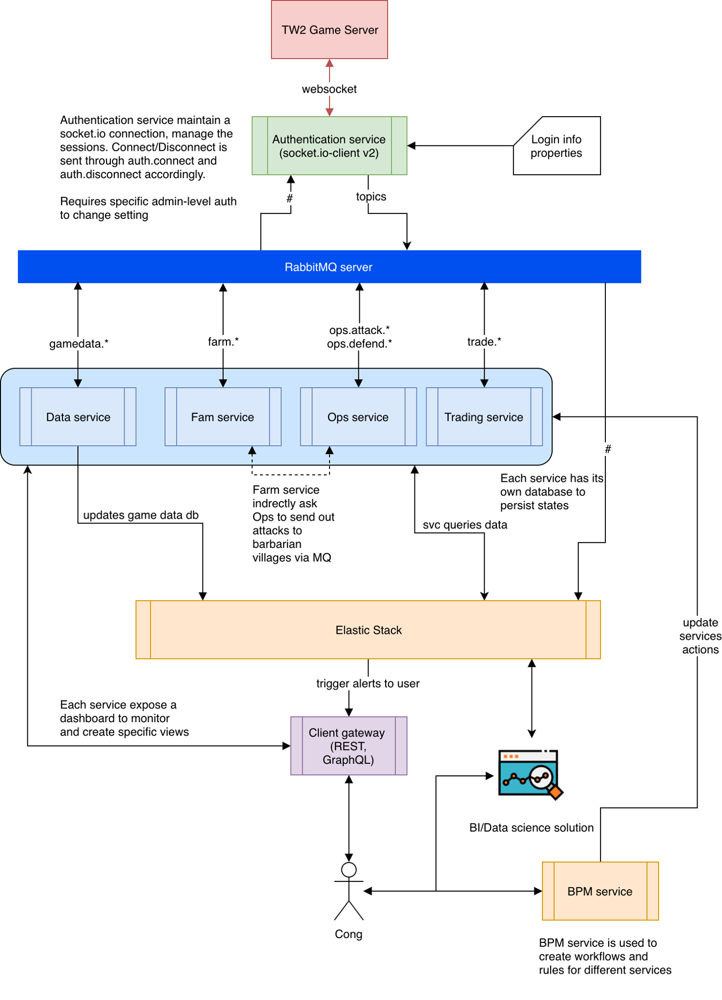

Tribal Wars 2 Manager - Architecture
Earlier this year, I developed a single process NodeJS application for all the services in this manager (shown down below) and it started to raise out-of-memory errors due to Node’s limitation. This project aims to eliminate this problem by splitting the manager into multiple services.
This blog post serves a documentation for the high-level design of my Tribal Wars 2 manager. The development for this project is not about cheating in Tribal Wars 2 but using the game as a motivator to learn new technologies. As of the published date of this post, this project is not open-source as it is still in development.
How the game works
Behind the scenes, Tribal Wars 2, henceforth referred to as TW2, uses a web socket implementation Socket.IO to communicate between the game GUI and server. At the time of this post December 2018, the game is using Socket.IO version 2.0. To connect to the game, I am using socket.io-client for Javascript as other implementations of the library is not as up-to-date.
The sequence to establish a connection to the game is as follows:
- Use socket.io-client to connect to the game
- Listen to the socket’s connect and disconnect events detect when a connection is ready.
- Listen to the socket’s msg event to intercept messages.
- The code excerpt below shows a rough sketch of how this works.
const io = require('socket.io-client');
const socket = io.connect('https://en.tribalwars2.com/', {
query: 'platform=desktop',
transports: ["websocket", "polling", "polling-jsonp", "polling-xhr"]
});
socket.on('connect', () => {
// socket connected
});
socket.on("disconnect", () => {
// socket disconnected, handle retries here
});
socket.on("msg", (messageObject: any) => {
// message received
});
To send a message to the game, the message must contain a type from the game’s routing and events keys in the game’s loaded Javascript file, and it should have an ID to identify replies to any requests. The game’s Javascript file changes frequently with each new release version. When loading the game, a game file usually comes up following the naming convention game-xyz.min.js, where xyz is a string of numbers and letters.
The code block to send a message is similar to the following.
send(msgObj: any) {
this.socket.emit("msg", {
type: msgObj.type,
data: msgObj.data,
id: msgObj.id,
headers: {
traveltimes: [["browser_send", Date.now()]]
}
});
}
Project high-level design
Now, with the basics out of the way, there are a couple of technologies that I want to play with in this project. These include:
- RabbitMQ - originally, I was going with Apache ArtemisMQ since I was learning Kotlin and was going to do a full Spring microservices thing. However, one of my mates was looking for a tech project to try out Jenkins and he’s only Ruby proficient. We went with RabbitMQ for its range of client library support in multiple languages.
- Elastic Stack - while looking for an alternative to Splunk Enterprise, I came across the Elastic stack or ELK previously. It’s like a MongoDB with all the cool bells and whistles; and you can even build a nice custom dashboard with Kibana and/or Canvas. So say a custom game map with player info and achievement datagrid.
- Activiti BPM - ops service for sending farms, attacks, defending, back-timing, dodging, etc. usually comes with some intelligence or rules that can be baked in and prioritised by the player.
- Anchore - for container security and compliance checks
- Jenkins pipeline to build up a docker stack for all services, perform CI tasks along the way.
- NGINX - last but not least, some reverse proxy. The player is likely to want a dashboard with information from each service, game data, etc.
- Kubernetes - used to orchestrate services in the manager. Personally, I have yet to work with K8s on a multi-node setup.
This manager is going to include multiple services: data scraping service, farm service, ops service, reports, trading service and alerting services for when you get attacked and such. They communicate to each other and to/from the game via RabbitMQ. The data is likely be stored in Elasticsearch and backed up to a free mlab’s MongoDB cluster.
The following diagram illustrates how services would work with each other. All services will likely to live on a single Docker node, while RabbitMQ and Elastic stack lives on their own separate nodes. I look forward to using Kubernetes to orchestrate the stack.
